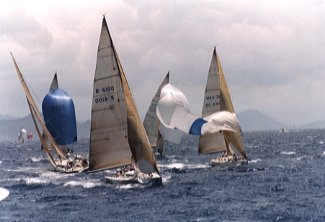

【Back Issues July.98】
31.July.98
(10:00) DS1BJU 01:43 50.110/150 SSB VK4DO 09:42 50.110/120 SSB ◎ 今日は午前中から49.750MHzのTVが強力に入感、N5JHVが聞こえた昨日とは明らかにコンデションは 変わっていた。 HL(DS1)が強力に入感してきたが、この局とQSOしている国内のスキャッターは聞こえ ない。 昨日入感したN5JHV(Dave)からの情報によると、昨日は00:35zから49.750MHzを受信、直ぐ50.110MHzで CQ DXを出し始めたとのこと。 JAがオープンし始めた当初はQSBが深く、受信に苦労したが、その後5分 ほどして信号はS=３ほどに上昇。 QSO出来た4局のほかにも、何局か弱い信号が確認出来たが、コンデシ ョンが落ちてしまい残念だったとのこと。 N5JHV(Dave)の設備は1,500Wに、ブーム長10mのアンテナ×4本を、地上高20mに上げて運用している。 今回の2回のオープンでは、JA側から呼んでもなかなか取ってくれないので、伝搬が"一方通行"ではない かといわれていたが、この設備を持ってしても、N5JHVの電波はお世辞にも"強い"とは言えないレベルだ った。 これをみても、パワー、アンテナ、ロケーションのトータルで「10db以上」は差のあるJAからの "信号レベル"は想像がつく。 F2伝搬とは違うこの"弱さ"を克服してQSOするのが、マルチホップEsの醍醐味なのだが「たかが、1エ ンティティー」と軽んじる局には、この楽しみは味わえない！？。 ◎ 09:42zから50.110MHzで入感したVK4DOはRS59+で強力だった。 50.120MHzにQSYして10分程で聞こえ なくなったが、この間JA1's、8エリアとQSO。 WallyによるとJA1、7のビーコンが良く入感していたので CQを出したとの事。 1エリアでは今季初？のVK4とのQSOと思われる。 この時間には46.172MHzのVK-TVが 弱く入感していた。30.July.98
(08:00) N5JHV 00:49 50.110 CW (00:47-01:35z) ◎ 7月20日に引き続き、N5JHVの入感があった。 00:47z頃から福島県・いわき市の局が50.110MHzの CWでコールし始めたのが最初？。 コンデションは間もなく1エリアにも移ってきたが、信号は弱かった。 09:55z頃からコンデションは上昇してきたが、JA側からの呼び出しになかなか応答が無く、N5JHVはCQ の連発だった。 01:10z頃から信号は更に上昇、この2、3分の間に今日のQSOが集中した。 01:35z頃には聞こえなくなったが、この間10局以上の1、2、7エリアの局が呼んでいたにも関わらず、 QSOに成功したのは僅かに4局(JA1=2、JA2=2)だった。29.July.98
(09:00) ◎ 去る7月20日のマルチホップEsで、N5JHVとQSOしたJA側の最も"遠距離"と思われる局がリポートされ ている。 現在確認されているのは、JA4KFA(岡山県・井原市、GL=PM64RO)、JA4DLP(岡山市)の両局だが、 JA4KFAとN5JHV間の距離は10,263Km。(参考:このコーナーで使用したソフトによる計算では10,300Km)。 尚、岡山市のJA4DLPはこれより30Kmほど距離は短い。 1981年7月にJA1でQSOしたWA5LIGの記録には僅かに及ばなかったが、マルチホップEsによる10,000Kmを 超える伝搬は、17年ぶりの"特筆もの"の記録。28.July.98
(09:00) ◎ 午前中は49.750MHzのTVのバズが強力。 昼頃から弱いJA8方面のEsが発生。 クラスターに、N5JHVから49.750MHzの入感(01:25z=10:25JST)がリポートされていたが、6mには反応 は無かった。 ◎ 5C5I、1A0KM、7Q7RM...etc、HF帯でも呼びたくなるような"珍局"がこの時期にQSO出来るヨーロ ッパの6mはうらやましい。 特に赤道直下の5C5I(赤道ギニア=JJ43)は、SM(スウェーデン)あたりか ら入感がリポートされているが、伝搬距離(約6,300Km)と共に、"珍局度"としてはピカイチ！。 太平洋地域の、JAの6m未交信エンティティーは、KH5K(Kingman Reef)、T31(Central Kiribati)、 ZL9(Auckland,Campbell Is)のわずか3つだけ。 これにNew候補であるH40、FO0×2を加えると合計 6エンティティー。 サイクル23でのQSOの可能性は大いにある。27.July.98
(10:00) JD1BIY 03:45 50.115 SSB DS1BJU 09:07 50.110/150 SSB ◎ 梅雨開けを思わせる強い日差しが照りつける関東地方の天気だったが、DXコンデションは"夏枯れ" 状態で静か。 午前中の強力な49.750MHzのTVに続いて、1エリアでは4-6エリアの国内Esが入感。26.July.98
(09:00) ◎ 午前中から夕方09:00z頃までは、西方面からのTVのバズもなく静かな6mバンドだった。 先週の北米入感(7/20)以降、Esのコンデションは大きく変わってしまったが、7月末から8月中旬頃 にかけて、ペルセウス流星群(極大日・8月12-13日)が登場するので、近場のDXはこれからもまだ楽 しめる。25.July.98
(10:00) BV2NT/1 04:22 50.110 SSB JD1BIY 07:40 50.115 SSB ◎ 1999年12月20日に中国への返還が予定されているXX9(マカオ)が、DXCCのエンティティーとして 消滅となる可能性が高いと噂されている。 昨年7月に中国に返還されたVR2(ホンコン)は、返還後 も引き続き中国とは別のDXCCエンティティーとして残ったが、マカオについては、現在のエンティ ティーの基準では返還と同時に消滅となると言われるもの。 このコーナーでは細かくは触れない が、ARRLのNX1L・秋山直樹氏の見解が「CQ誌」8月号P243頁に掲載されている。 「6m・DXCC」では、"消滅エンティティー"となったQSLも全てカウントする事になっているので、 消滅となる前に是非QSOして置いた方が良い。 ただ、XX9からのQRVの頻度は、お隣のVR2とは比較にならないほど低い(6mの常駐局が居ない)ので、 意外とQSOは難しい。 最近では、5月下旬にVR2SSが運用したXX9TSSがあるが、この時はSSBの免許 がもらえず、電話は51MHz帯の「FM」だけという"変則"運用だった。24.July.98
(04:00) VR2YRC 00:30 50.110 SSB ◎ ちらほらとVK入感のリポートも聞こえるようになったが、本格的なオープンはまだまだ先の話。 それでも今年はサンスポットが上昇している分だけ、Esが衰えると同時に入感が始まりそうな気配。 ちなみに、昨年の1エリアでの入感は9月下旬のVK8RHだった。 ◎ このページのLINKコーナーに[JARAニュース]をリンクしました。 JARA(Japan Amateur Radio Australia)は、オーストライア在住の日本人ハムを中心に、海外でア クティブな日本人局の話題や、オーストラリアでの免許取得方法などホットな話題が満載されており、 海外での運用(特にオーストラリア関連)を目指すハムには必見の"Webサイト"。 この"Web"は、キャンベラ在住のVK1ARA(荒 大助)OMによって運用されている。 VK1ARA・荒(Ara)さんは今年から本格的に6mにQRVすべく準備しており、仕事場にもVK1SIXを開局、 CL6AをJAに向け、50.110MHzをワッチしているとのこと。 今シーズンは、VK1のオープン時には「日本語」でのQSOが楽しめそう。23.July.98
(10:00) VR2YRC 00:34 50.110 SSB BV2DP 01:15 50.110 CW ◎ 久しぶり？に強力なVR2(ホンコン)が入感していた。午前中と夕方に一時的に西方向からのTVのバズ が強くなる。 "２匹目のドジョウ"を狙って午前中から北米方向にアンテナを向けている局も多いと思 うが、今のところ"ドジョウ"は現れない。 前回入感した午後4時(日本時間)前後と合わせてワッチの時 間帯が絞り切れなくなってやりにくくなったのでは？。 北米側の局からクラスターを通じて49.750MHz の入感状態がリポートされてくるので、それを参考にワッチするしかない。 09:30z頃に西日本(JA4)でVK4(VK4DO等)とのQSOがリポートされていたが、1エリアではこの時間にVK4 はおろか、46MHz帯のVK-TVの入感も無かった。22.July.98
(10:00) UA0CQ 01:52 50.110/105 CW/SSB *UA0CQ 02:16 50.110 SSB QSY to 144.110MHz UA0CAA 09:06 50.145 SSB ◎ 昨日の"World Es Record"の件は、掲載されていた「Internet Six News」から、今日になって削除？ されていた！。 他から"調査不足"を指摘されたのが理由だったのかどうかは定かではない。 記録のデータとしては面白いので、資料を揃えてから再び公表してほしい。 ◎ JE7RJZ・野田(Nao)さんは、7月24-28日の予定でGuamから運用する。コールサインはWH2Mを使用。21.July.98
(10:00) ◎ 二日と同じコンデションは続かないと言われるEsマルチホップのDX伝搬だが、昨日のコンデションと は打って変わって静かな6mだった。 ◎ 昨日JA'sとQSOしたN5JHV(Dave)が、JA1VOKとのQSOが"World Es Record"ではないか？とリポートし ていた。 N5JHVの試算では、QM05-DM62間の距離は9,633Kmとの事だが、残念ながらこの数字はW-JA間の Es伝搬記録としてはありふれたもので"世界記録"にはならない。 Esのマルチホップでは、北米側のエリアはW6、7、などの太平洋側が多く、W5、0などの内陸部まで伝搬 するのはまれなことは確か。 過去の記録をたどってみてもEsでのW5とのQSOは少ない。 われわれの記憶では、1981年の7月9日にオープンしたテキサス州のWA5LIGの入感が思い出される。 この日は05:00z(14:00JST)から08:15z(17:15JST)までオープンするFBなコンデションで、ワシントン、 ユタ、アイダホ州などのW7'sに混じってテキサス州まで伝搬が伸びた。 WA5LIGのSSBの信号は強かった(ピークでRS59)が、JA側の電波をなかなか取ってくれなかった事を記憶し ている。(今回のN5JHVも同じ様な状態だったのかも) 今回のオープンではJA4、6がFBにQSO出来たが、リポートされている中では、佐賀県のJA6RJKが距離的 に最も北米から離れていた局だった。 昨日のリポートを基に双方の距離を計算してみると、次の通りとなる。 ○1998年7月20日の記録 JA6RJK(PM53FH)-K7CA(DM26DO) 9,669Km [JA6RJKのGLを(PM53FH)で計算した値] *JA6RJK -N5JHV(DM62PH) 10,599Km [参考] JA1VOK(QM05BR)-N5JHV(DM62PH) 9,633Km [N5JHVの"試算"はJA1VOK側を(QM05)の4桁で計算した値] *9,756Km [JA1VOKのGLを(QM05BR)で計算した値] ○1981年7月9日の記録 JA1RJU(PM95SQ)-WA5LIG(EM12) 10,439Km [WA5LIG側を(EM12)の4桁で計算した値] *JA6RJK(PM53FH)-WA5LIG(EM12) 11,193Km [参考] この計算によると、JA6RJKが今回QSOしたK7CAは約9,700Kmとなる。 N5JHVとQSO出来ていれば約10,000Km を超える距離となった。 もし4エリアより西でN5JHVとQSOしている局が居れば10,000Kmに近い記録となっ ている可能性がある。 QSOされた局は試しに計算してみるとよい。 1981年のJA1-WA5LIGのQSOは10,000Kmを超えるものだが、JA1より西になればこの距離はさらに増える。 もし、今回の様に佐賀県でQSOしていれば11,000Kmを遥かに超える記録となった。 以上は、「グリットロケーター」によって2点間の距離を求めたものだが、計算式によって若干の誤差が あると思うが、大体の"目安"になる。 尚、「グリットロケーター」で距離を求める場合は出来るだけ「6桁」で計算すること。 4桁で計算すると (+)か(-)に最大約100Kmほどの誤差が出る。 何局QSOしても"たかが1カントリー"と言われる北米大陸だが、こんな楽しみ方もある!?。20.July.98
(10:00) HL5XF 06:38 50.129 CW KH2/JA4DND 08:51 50.110 CW BP0RIW 09:38 50.116 SSB HL1LTC 09:42 50.130 SSB UA0CAA 09:45 50.240 SSB ◎ 待望のEsのマルチホップによる北米のオープンがあった。 ただし、今回のオープンはJA4、6など 西日本を中心としたもので、残念ながら1エリアなど東日本ではほとんど聞こえなかった。 01:40z頃から50.110MHzで西日本で弱いパイルが始まった。 コールしている局のわりにはQSOしている 局が少なかったので条件は悪かったものと思われる。 1、2、7、0エリアでも散発的に呼んでいる局が いたがQSOは...？。 西日本の局は、W方向に条件の良い東日本が楽にQSOしていると思っていた様だが、 今回の入感はアンテナ方向が東寄り(ハワイ寄り)で、伝搬は西日本のJA4-6エリアに有利だったもよう。 この時間帯のEsマルチホップによる北米方面のパスは最近では珍しい。 最近は米本土とハワイのパ スがリポートされる様になって、米本土の局も"西"にアンテナを向ける局が多くなったのと、双方が 共に"休日"(北米西海岸は日曜日の夕方)という条件が幸いしたオープンだった。 今回のオープン時間がW-JA間の"ベストタイム"かどうかは分からないが、少なくとも今回のオープン でこの時間に双方が"意識を向け合う"ことは確かなので再びオープンする可能性はある。 ○ 日米双方で確認された入感局は次の通り('98.7.20現在のClusterより) JA6RJK-N5JHV 01:55 50.110 CW(H) JA6RJK-K7CA 02:14 50.098 CW JA6RJK-K7FF 02:23 50.108 CW JN4CIW-K7CA 02:33 50.098 CW JN4CIW-N6XQ 02:38 50.095 CW JA4NUE-K7CA 02:44 50.098 CW JA6QGG-N5JHV 01:50 50.110 CW(H) WX7R-JA6JRA(?) 02:25 50.110 CW(H) (JA6RJK or JA6LLA?) K7CA-JH2COZ 02:56 50.097 CW WA6HHQ-JE4TRE 03:23 50.110 CW(H) ◎KH2/JA4DNDは08:10z頃から6mにQRVしてきた。 この時間にはJAとのパスは無かったが、08:50z頃に なってコンデションが上昇(RST559程度と弱いが)、QSOが可能となった。 本日のQSOはJA1(7局)、2(2局)、4(1局)、5(1局)の11局。 KH2/JA4DNDの6mは09:54zにQRTした。19.July.98
(10:00) KH2/JA4DND 08:06 50.110 CW ◎ 一昨日の夜からEsのコンデションもだいぶ変わった。一日中50MHz帯までバズをまき散らしていた 49.750MHzのTVも、ほとんど聞こえなくなってしまう時間帯もある。 まだ一時的なものかも知れない が、TEPの伝搬がリポートされる様になるとそろそろEsシーズンは終わる。 今日の夕方(08:06z)、50.110MHzのCWでCQを出したJA7WSZに、KH2/JA4DNDがコールしてきたが、1エリ アではかろうじて130度方向で信号が確認出来る程度の微弱な電波だった。 08:48zに28MHzでQSOした 時の情報では、この後にJA7(6局)、4(1局)、6(2局)エリアとQSO出来たとのこと。 残念ながら28MHzのQSOの後、6mにトライしたが、この時間には1エリアでのオープンは無かった。 KH2/JA4DNDは昨日まで「T88」で運用していたFEDXPのメンバーで、今朝Guamに移動し08:00zに6mの アンテナを上げてQRV始めたもの。 一行は明日(20日)の夕方までGuamからQRVする。 この時期(夏場)の太平洋方面からは、日本時間の夕方にパスがあるが、コンデションの移り変わり が激しい。 昨年の7/8-11にかけてKH2K/AH0でサイパンから運用し、05:37-08:26zにJA'sと50局ほどQSOできたが、 オープンしていたエリアは2エリアから東が良く聞こえ、局数は少なかったがJA7、8エリアの信号は強 かった。18.July.98
(10:00) BI5Z 00:20 50.110 CW (VK8AH 07:46 50.110/135 SSB JA2) ◎ 6mのBI5Zは00:20z頃に弱く入感していたが、信号は上昇しないまま終わった。 HF帯では02:45z頃 まで聞こえていた。 昨日の午後からこの方面へのコンデションは大きく変わってしまった。 VK8AHからClusterにJA2IGYのビーコン受信のリポート(07:35z)が寄せられていたが、この直後(07:46z) にJA2DDN等がQSOしている。 信号は弱く、スポット的なオープンだったが、アフタヌーンタイプのTEP は今季初。 尚、VK8AHは08:09zにFEDXPのDX-Pedition・T88NDとQSOしている。17.July.98
(10:00) BI5Z 01:24 50.110 SSB ◎ 昨日に引き続きBI5ZがFBに入感した。 01:24z頃から50.110MHzのSSBでCQを出していたが、この時 間には応答するJAは少ない。 今日は昼のコンデションは長続きせず、正午前に聞こえなくなった。 昨夜はBI5Cも遅くまでオープンしていたが、JA側での伝搬のベストエリアはBI4Cの時より西に移動 した。 BI5Zは18日の午前中まで運用する予定。 ◎ 昨夜14:23z頃から、VK8AH(ダーウィン)が入感、JA2以西でQSOしている。 VK8AHは15日の夜にも 入感、13:02zにJA5CMOが今季初のQSOをしている。16.July.98
(10:00) HL5XF 03:07 50.130 CW/SSB BI5Z 04:22 50.110 SSB HL1LTC 04:41 50.110 SSB BI5Z 05:45 50.110 CW DS1GKS 08:11 50.110 SSB (VK8AH 14:23 50.110/130 SSB) JA2、6、0...etc ◎ 昨日までのBI4Cに続き、今日からBI5Z(Zhoushan Island=舟山島)の運用が始まった。 BI5Zは04:22z(13:22JST)に50.110MHzのSSBでCQを出してきたが、最初の信号はBI4Cの時よりも若干弱 かった。 夕方近くになって信号は上昇、日中の伝搬だけでJA1-0までの全エリアとHL1/5がQSO。 BI4CとBI5Zは距離的には直線で南北に約150Kmほど離れているだけだが、入感状況は微妙に変わった。 ◎ ここのところW本土とKH6/7(ハワイ)のQSOが続いている。 今年は大西洋のW-EUのオープンに比べ太 平洋方面のマルチホップのオープンがなかったが、ようやくコンデションが太平洋方面にも移ってきた？。 ◎ FEDXPのメンバーによるT88(7/16-18)、KH2(7/19-21)の運用が行われる。160m−6mでのQRVを予定し ている。15.July.98
(10:00) BI4C 00:15 50.110 CW/SSB VR2SIX 01:33 50.075 CW Beacon HL5XF 05:30 50.110 CW JT1CO 09:49 50.110 CW CQ Beacon JT1JA 09:58 50.110 CW JT1BJ 10:03 50.110 CW (VK8AH 13:02 50.110 SSB JA5CMO) ◎ BI4Cは昨夜15:00z(00:30JST)頃まで聞こえていた。 この夜間のオープンでJA6、8エリアとのQSOも 行われ、これでJAの全エリアがQSO出来た。 BI4Cは今朝も00:15z(09:15JST)頃から強力な電波で聞こ えてきたが、01:25z(10:25JST)にはQRT？した。 今回のBI4Cは、距離的に1エリアとは"相性"が良かっ たようで、昨日の昼から丸一日近く、QRVしていたほとんどの時間、強力に入感していた。 普段はTVの障害で6mのQRVが少ない中国本土だが、意外な時間にもJAとルートが開いていることを証明 してくれたBI4Cの運用だった。 明日からの運用が予定されているBI5ZはQTHが南に移るので入感状況が 若干変わる可能性がある。BI4C/BI5Zの運用場所14.July.98
(13:00) BI4C 03:03 50.110 SSB IOTA AS-136 BI4C 04:49 50.110 CW *BI4C 07:02 50.110 SSB/CW *BI4C 12:40 50.110 CW ◎ 中国の「Beijin DX Club」によるIOTA PeditionのBI4Cは、03:03z頃から50.110MHzのSSBでQRVし て来た。 BI4Cは強力で、08:00z過ぎまで安定に入感していた。 オープンしていたエリアはJA6、8を 除く全エリア。 最初の頃は50.110/115MHzのスプリットでJAのパイルアップをさばいていたが、平日 の午後では1時間もしないうちに呼ぶ局はまばらに。 05:00過ぎにはCW/SSBでCQを"連呼"するだけで、 一時、聞こえなくなった。 07:00z過ぎから再びSSBで入感してきた時にはRS59++の強力なシグナル。 BI4Cの電波は12:30z以降にも強力に入感していたが、アンテナの方向は若干西寄りのビーム。 BI4CのQTHは上海市の北東3-4Kmに位置する「長興島」((Changxing Island=E121.7 N31.4)。エンティ ティー(カントリー)的には中国(BY、BA-BG)と同じ扱い。 BI4Cの運用は今日までで、15日にはBI5Z「舟山島」(Zhoushan Island)に移動する。 尚、QSLはW3HC(Carl F Mc Daniel, 2116 Reed St, Williamsport, PA 17701 U.S.A.)へ。13.July.98
(13:00) ◎ 西方向からのバズが強力なので今日から始まる予定のIOTA Pedition、"BI4C"の入感を期待したが、 6mでは聞こえなかった。 夜になってからHF帯(7.051MHz)でQRVを確認できたので、6mのQSOは14日？。 ◎ GuamからアクティブにQRVしていたKG6JDX(Joe)が、今年の7月に、仕事の関係で青森県三沢市にQSY する事が決まったことは先月お知らせしたが、来日を前に彼の日本でのコールサインが「7J7ACX」に決 まった。 また、Guamで彼の同僚だった KG6DX(Joe)からも、同じ時期に三沢市にQSYしてKG6JDXと仕事 をする事になったと連絡があった。 KG6DXは以前に「7J1AEJ」のコールサインで日本から短期間運用し たことがある。 彼は今回もこのコールサインを再び使うか、新たに「7J7」を申請するか検討中。 2人は、いまから6mにQRVするのを楽しみにしているので、サイクル23は"青森"の6mも「二人のジョー」 で賑わいそう？。12.July.98
(10:00) HL3EPH 01:15 50.112 SSB HL1MLO 02:26 50.110 SSB RZ0CQ 05:11 50.200 SSB RW0CD 06:20 50.120 SSB RW0CD 06:59 50.110 CW/SSB *RW0CD 08:27 50.110 CW ◎ 午前中は西方向からのバズと共にHL'sが入感、3、5エリアから東日本にかけての広い範囲がパイルア ップしていた。 午後からQRVしてきたRZ0CQ(Vlad)は50.200/220MHzと高い周波数だったので気が付かな かった局もいたかも知れない。 Vladは「昨日と、今日の2日間だけ免許になった...」と言っていたが、 例によってパケット・クラスターにはUA0FZによる「ALL UA0 PIRATE...」の書き込みが今日もみられた。 特別に免許されて出ている局がいるのも事実なので、UA0FZが執拗にクレームを書き込んでいる"真意"が 計りかねる。 どういう訳かUA0CQ、RZ0CQ、UA0CA、RW0CD...などロシアの6m局は似たようなコールサイ ンが多いので混乱しているJA局もいるようだ。 呼ぶときは良くコールサインを確かめて！。11.July.98
(10:00) HL5XF 00:42 50.110 CW HL1ACW 00:50 50.220 SSB (UA0CA 02:35 50.112 SSB/CW) JA4/6's HL5XF 03:55 50.130 CW UA0CA 08:45 50.112 SSB *UA0CA 09:38 50.112 CW ◎ 午前中から49.750MHzのTVが強力。02:30z前後にJA6方面でQSOしていたUA0CAは1エリアではスキップし ていて聞こえない。 08:45zからの入感は1、2エリアを中心に良く聞こえていた。 ◎ 先日お知らせした北京の「Beijin DX Club」のIOTA-Peditionについて、メンバーの一人BA1DU(Alan)か ら最終スケジュールが届いた。 それによるとBI5ZのQRV開始が当初の予定より1日早まっている。 尚、IOTA ContestにあわせてBI3Hの運用も再び行われる。 今回の使用Rigは4el HB9CVとIC-706MK2(100W)。 BI4C(Changxing Island=E121.7 N31.4) 13-14.July. BI5Z(Zhoushan Island=E122.2 N30.1) 15-17.July.10.July.98
(10:00) ◎ いつも強力な49.750MHzのTVも今日はほとんど上昇してこなかった。バンドはいつものバズも無く静か。 6月下旬から7月3日頃にかけてSSNは140近くまで上昇していたが一昨日(8日)には50近くまで落ち込んだ。 夏場の今の時期は6mのDXに対するコンデションは"休業"状態なので直接の影響はないが、秋のコンデショ ンに向けてサイクル23のピークまで、休まず一気に押し上げてもらいたいもの。 サイクル23がスタート(1996年5月)してすでに25カ月を過ぎたが、発表されているSSNの上昇カーブはサイ クル22の時のカーブと比較すると若干"ゆるやか"な感じを受ける。 このカーブがはたしてピークとなる 4-5年目(2000-2001年)にはどこまで上昇してくれるのか気がかりになる。 30カ月目となる今年の12月頃に はSSNは90-100と予測されているが、ここまで上昇してくれると今年の秋から来年春には、DX-QSOもかなり 期待できる。09.July.98
(15:00) HL1LTC 10:12 50.130 CW DS1BJU 10:14 50.110/150 SSB ◎ 49.750MHzのTVのバズは相変わらず強力。 夕方近くなって8エリアがEsで入感してきたが、この局がQSO しているHLは1エリアでは入感しなかった。 09:00z頃から6エリアがEsで聞こえ始める。 "注目"されている07:00z(16:00JST)前後は北関東方面の雷雨のためノイズが高くDXを狙う雰囲気ではない。 大気の不安定な梅雨明け前後は、夕方にこの"雷ノイズ"に悩まされそう。08.July.98
(10:00) ◎ 1エリアからは午後に49.750MHzのTVと共にEsで弱い6エリアが聞こえていたのでHL(韓国)もオープンして いたものと思うが、50.110MHz付近では確認出来なかった。 夕方からのEsは7(青森)、8エリアに移ったが、 ひと頃のような強力なEsはだんだん陰をひそめてきている。 07:00z(16:00JST)前後の北東方面のパスを期待しての"CQ DX"が連日聞こえているが、今のところ残念なが ら反応は無い。 ただ、この時間にKH6/7(ハワイ)で49.750MHzが受信出来ているようなので、こちらはわず かに望みはつながっている。 相変わらず北米−ヨーロッパ間のパスは続いているようで、W1-4(東海岸)とG(英国)のQSOが多数リポートさ れている。07.July.98
(10:00) ◎ 午前中に西方向の49.750MHzのTVと同時に、48MHz帯(250/260MHz)のTVが強く入感していることがある。 今日はこの時間にVR2-JA7/8がオープンしていた。 49.750MHzのロシア？のTVは深夜まで強力に入感している が、この時間帯(15:00-17:00z=00:00-02:00JST)に、北西(310-320度)方向から48.250/260MHzのTVが聞こえて いる事がある。 48MHz帯をTVに使っているのはヨーロッパに多いのだが、アジアでも東南アジアや中近東で も使っているのでアンテナ方向が北西だからと言って"ヨーロッパのTV"と短絡的に考えない方がいい。 と、 言いながらもチョット気になる電波だ。 東南アジアのスキャッターの可能性もあるが、"宵っ張り"の方は一 度聞いてみてほしい。 48.250MHzより、48.260MHzの方が強く入感していることが多い。06.July.98
(10:00) HL5XF 00:34 50.110 CW JT1CO 05:55 50.110 CW ◎ 南西-西-北西方面のVR2/JT/UA0と南-南東のKH2/V73/JD1mまで、今年の夏場のDXの入感エリアは大体"見え てきた"感じだ。 今のところ、5月末の短いW/Nのオープンが唯一の"Big DX"となっているが、このままで終わ ったのでは淋しい。 7月の北米方面は例年ならばまだ可能性はあるのだが、最もJAに近い"北米大陸"のKL7(アラスカ)が聞こえて 来ないのが気になる。 ひと頃のKL7HAMやWA4TNV/KL7のようにShemya Isからでも出てくれる局がいれば確実に 聞こえているはずだが...。 A4や4LのQRVのニュースはあるがEsマルチではあまりにも遠すぎる。 ここ2、3日の北米大陸はK1(FN44)-W7(CN84)、K2(FN12)-W7(CN85)など国内QSOで賑わっている。国内といって も東海岸(W/K1)と西海岸(W6/7)では4.000Kmをはるかに超えるパスとなる。05.July.98
(08:00) VR98BG 00:35 50.100 CW VR2XMQ 02:02 50.110 SSB VR2XMT 02:07 50.110 SSB BV2PU 02:13 50.099 CW BV2HL 03:07 50.109/124 SSB BV7GK 03:09 50.110 SSB BP0RIW 04:58 50.117 SSB ◎ "聞こえなくなった..."と書いたとたんに、久しぶりにVR2の入感があった。 信号は弱く、02:00z前には F.OUT。その後はBV'sが良く聞こえていた。04.July.98
(09:00) UA0ZBK/0 01:53 50.110 CW DS1BJU 05:32 50.110/160 SSB ◎ コンデションは西−北方向のパスに移ってしまった。 先日まであれだけ入感していたVR2の信号は1エリ アからはパッタリ聞こえなくなった。 入れ違いに同じ距離にあるJT/UA0が聞こえているので何とかDXに対 する"興味"が保たれている。 北米側からの期待に反して07:00z(16:00JST)前後の北東方面は鳴りをひそめ たまま。03.July.98
(09:00) JT1CO 02:00 50.110 CW JT1JA 03:00 50.110 CW OP Mend *JT1CO 03:45 50.110 CW ◎ 午前中からJT1COの"CQ Beacon"が50.110MHzを"占拠"していた。呼ぶJA局はチラホラだったが、応答し てくるコールサインは昨日と同じJT1JA(Mend)。 ◎ 9M0C(Spratly Is)のQSL 「QSLはすぐ届きました！」「QSLが届きません。まだ発行していないんですか？」と、今のところ半々 の"反応"。 QSLはマネジャーのG3SWHから順次発行されているので、送り方を間違えていなければ近日中 に届くものと思われる。 ただ、複数の局のSAEを同じ封筒で送ったり、ビューロー経由のQSLは後回しに なる可能性がある。 JARL経由でJA1RJU宛に送られてくるQSLもあるが、マネジャー以外からはログもQSL カードも無いので発行出来ない。 9M0C QSL G3SWH Phil Whitchurch, 21 Dickensons Grove, Congresbury, Bristol, BS19 5HQ, England02.July.98
(10:00) DS1BJU 06:55 50.110/150 SSB JT1CO 07:24 50.110 CW CQ Beacon of JT1JA JT1JA 07:29 50.110 CW *JT1JA 07:50 50.110 SSB *JT1CO 09:10 50.110 CW *JT1JA 09:17 50.110 SSB ◎ 午前中から西方面の49.750MHzのTVが強力。 06:24z頃からJT1COのCWのCQが入感してきたが、JT1COは JT1JA(Ebi)がCQを出すときに使っている"CQマシン"専用のコールサイン。 JT1COのCW・CQをコールすると、 JT1JAが応答してくるので、最初の頃は混乱していた。01.July.98
(10:00) DS1BJU 02:58 50.110/150 SSB ◎ 先月は中国のJSDXC(JIANGSU DX CLUB)によるIOTA特別局・BI4Qの運用が行われ6mでもFBにQSO出来たが、 今月は北京の「Beijin DX Club」によるIOTA関係の運用が予定されている。 今回はHF帯と6m、2mを運用。 日程は次の通り。(TNX JF2MBF) BI4C(Changxing Island=E121.7 N31.4) 13-14.July. BI5Z(Zhoushan Island=E122.2 N30.1) 16-17.July. ◎ ここのところモンゴルやロシアなどの大陸方面からの入感で6mは賑わっているが、先日(6月29日)パケ ットクラスター(Packet Cluster)にチョット気になる書き込みが行われた。 6mのUA0**の入感リポートの直後にUA0++局から、"UA0** PIRATE NOT LISENSE FOR RUSSIA"の書き込み があったのだ。 この書き込みをご覧になった各局から確認のための問い合わせをいただいたが、外国での 免許の問題だけに部外者のわれわれの知るところではない。 本来ロシア(旧ソ連全域)はヨーロッパと同じ「Region 1」(第1地域)に含まれるため50MHz帯の割り当て は無かった。 その後、ヨーロッパで50MHzの運用が正式に許可されるようになってロシアのアジア地域か らの運用も期待された。 しかし、アジア地域では50MHz帯に近接する周波数(49.75MHz)をテレビが使用し ている関係もあって簡単に6mが解放されることは無かった。 特に日本海に面した都市、ウラジオストック 近郊(GL=PN53)では当初からテレビとの問題が深刻で、初めて6mが運用された1991年12月27日のEK0JA以来、 運用場所や時間が制限されてきた。 ウラジオストックからの6mの電波は1996年7月15日のRM0Mから聞かれ ないが、いまでも6mが自由に免許されていないと判断される。 一方、現在UA0ZBK/0(GL=PN68)、UA0CQ(PN78)などがQRVしているハバロフスク近辺では、テレビの妨害 もなく運用出来るとのこと。 ここからは初運用となった1992年4月21日のUZ0CWW(JAからJA1UT等が参加) 以来、多くの局が運用している。 この様に場所によっては正式な免許での運用も可能なのだが、テレビ との"共存"が出来ない場所ではいまだに厳しく50MHzの運用は規制されている。 サハリン(樺太)の局が21MHz/50MHzでのクロスバンドQSOを希望してくるのは「免許」の問題があるから だ。 今回はUA0の局が名指しで"同胞"を「PIRATE」(今回は他人がコールサインを盗用して運用したので はない)と決めつけたわけだが、いずれにしても正式に免許を受けての運用なのかどうかを、外部のわれ われがとやかく言うことではない。 ただ6mがシングルバンド(特記)のDXCCとして認められている現在、 この種の問題が"表沙汰"になると、DXCC申請のQSLの取り扱いに波及してくるのは明白である。[ RUSSIA(アジア地区)から運用してきた6m局 ] 1991.12/27 EK0JA(PN53) 1995.05/20 UA0CQ(PN78) 1997.07/12 RW0CD 1992.02/02 EK0JA 06/11 UA0CQ 07/13 RZ0CQ(PN78) 03/08 EK0JA 1996.06/17 UA0CQ 07/18 UA0COO(PN78) 04/21 UZ0CWW(PN78) 07/06 RW0CD(PN78) 07/29 UA0ZBK/0 07/15 UL7GCC(MN83) 07/15 RM0M 07/31 UA0COO 07/20 EK0LJA(PN53) 07/31 RW0CD 1998.05/19 UA0ZBK/0 1993 05/05 RZ0CZZ(PN78) 09/04 RW0CD 06/27 UA0CQ 1994.06/06 RZ0CZZ 1997.07/02 UA0ZBK/0(PN68) RW0CD RK0CWC(PN78) 07/12 RZ0CQ(PN78) * PN53 ウラジオストック 07/18 RM0M(PN53) UA0CQ * PN78 ハバロフスク
| Index | Back Issues |
|---|---|
最新情報へ戻る |